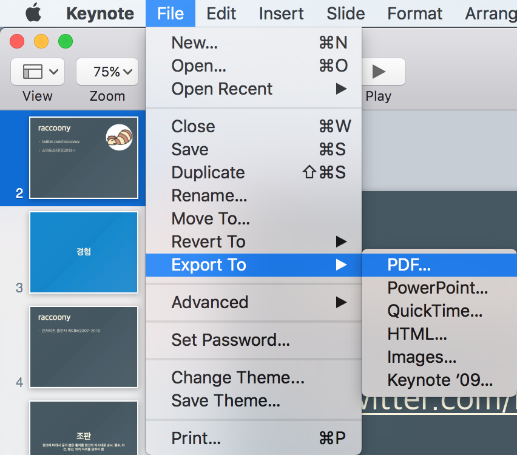
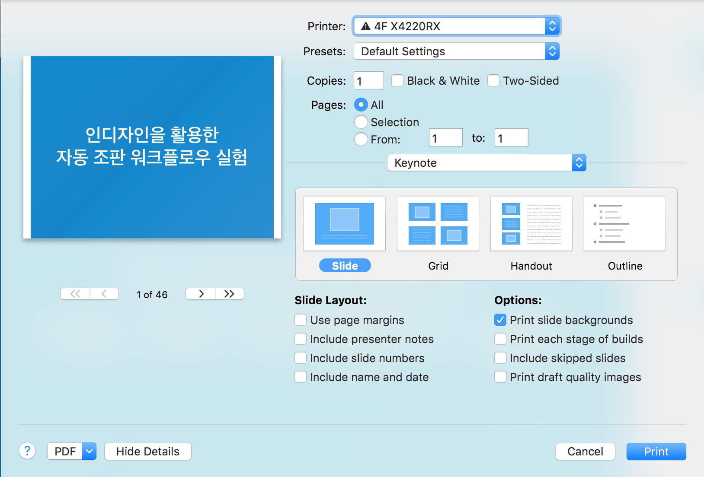
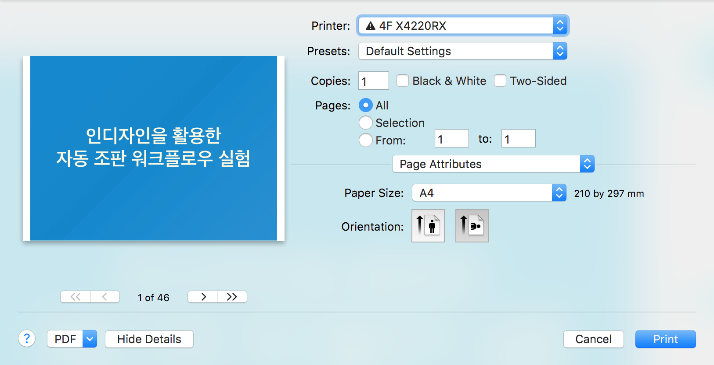
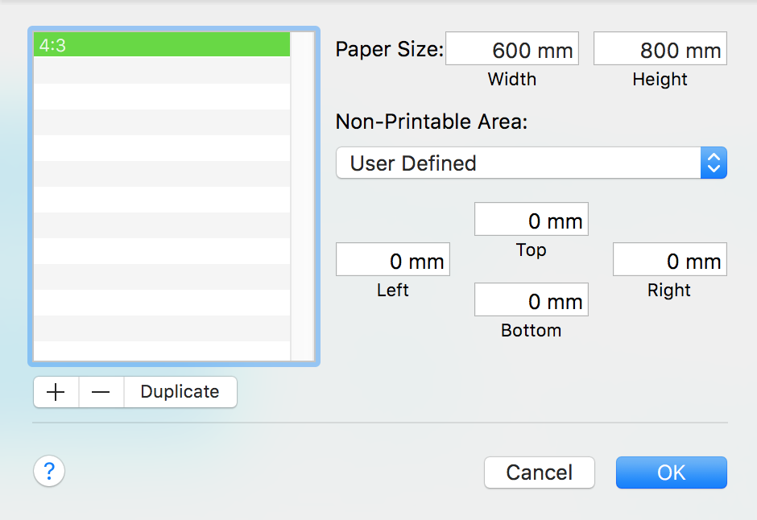
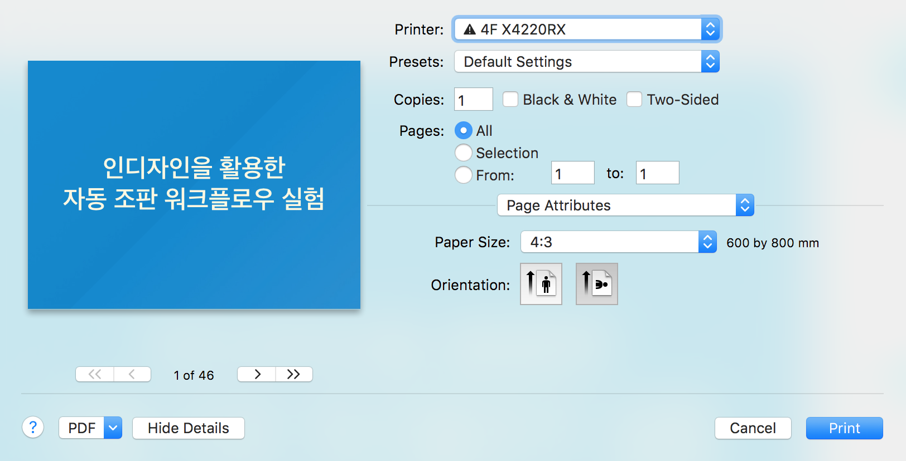
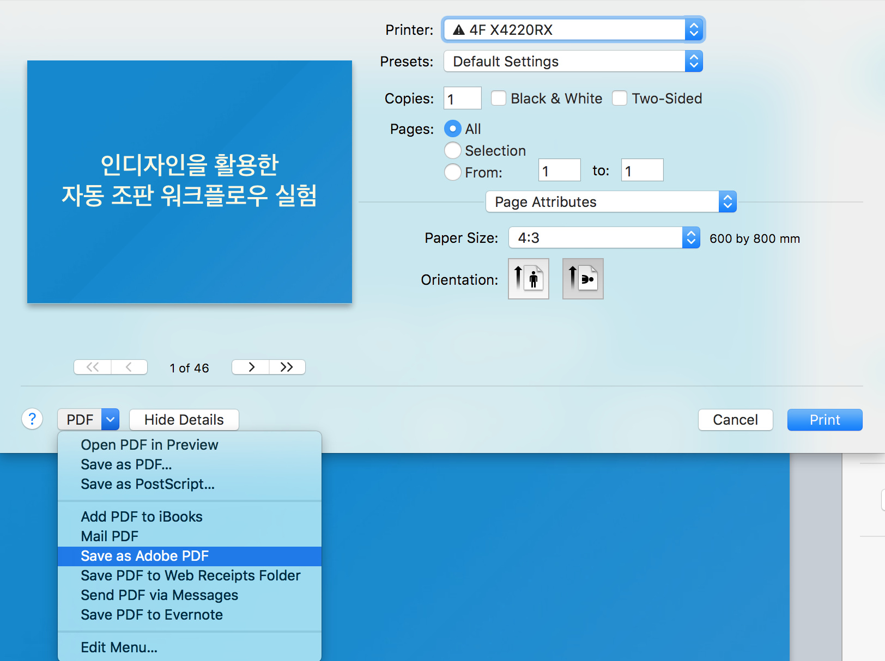
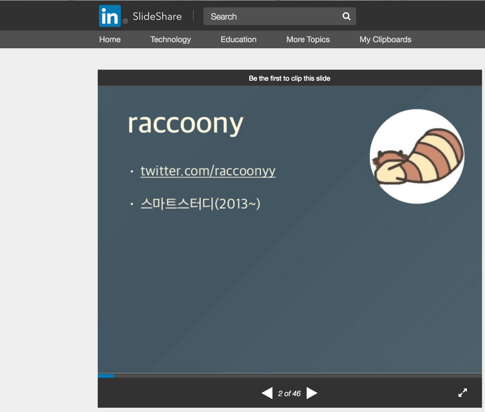

2017년 4월 20일 업데이트!
item4님이 해결 방법을 공개하셨고, 이를 활용한 OSX용 프린트 플러그인도 softdevstory님이 공개하셨습니다. 참고하세요~ ^^
문제
언젠가부터 키노트의 Export To > PDF 기능으로 만든 pdf 파일을 슬라이드셰어에서 제대로 인식하지 못하는 듯 하다.
다음과 같이 만든 pdf는

이렇게 글자가 안 보이는 현상이 나타난다.
그래서 궁여지책으로 speackerdeck을 사용해왔는데, 얘들은 간혹 한국 ip를 차단하는 건지 파일 업로드 후 처리 과정에서 막히는 경우가 종종 발생했다.
어떤 해법
한글 폰트에 열받은 율무님은 이런 슬라이드를 만들기도 했고...
검색
나도 고통을 받다가 혹시나 해서 검색을 해보니, slideshare에서 비슷한 문제를 겪은 일본 프로그래머가 있었다.
따라하기
우회 방법(해법이라고 하지 않은 이유는 나중에 설명)은 바로 Print 기능을 사용하는 것.

그런데 미리보기 창에 나타나듯 화면 양 옆에 여백이 생긴다. Print 기능은 말 그대로 출력물이기 때문에... 그러니 종이 크기를 4:3 사이즈로 바꾸자.
오른쪽 중간 쯤의 Keynote가 선택되어 있는 SelectBox를 눌러 Page Attribute를 선택한다.

그리고 A4가 선택되어 있는 SelectBox를 눌러 제일 아래에 있는 Manage Custom Sizes...를 선택한다.
팝업 창에서 더하기 버튼(+)을 누르고 다음과 같이 입력하고 OK를 누른다.

여백이 사라졌다. 짠!

이제 왼쪽 아래 부분의 PDF가 선택되어 있는 SelectBox를 눌러 Save as Adobe PDF를 선택해주면 된다.

이렇게 만든 pdf 파일을 슬라이드셰어에 올려보면 글자가 잘 보인다.

단점
앞에서 '우회 방법'이라고 말한 이유를 이제 설명해보자면, 이렇게 만들어 올린 파일에서는 링크가 눌러지지 않는다.
그래도 글자가 안 보이는 것보다는 낫지 않나 해서...
추가
내가 따라한 글의 윗 부분에 이상한 명령어를 적어두었기에 자세히 살펴보니, 궁극의 해법이라는 듯 했다. 명령어의 출처는 하테나 블로그 글.
이 글에서는 문자 코드와 CMap 같은 어려운 이야기들을 늘어놓으면서, 슬라이드셰어가 어떤 문제를 제대로 처리하지 못한다고 지적한다. 해당 문제를 슬라이드셰어 쪽에 신고했는데, 문제를 알려줘서 고맙지만 언제까지 고칠 수 있을지 장담은 못한다는 답을 받았다고 한다. (보통 이런 경우 '우린 그 문제를 다룰 여력이 없다'는 식으로 해석하면 되던데...)
그러고나서 어떤 사람이 pdf 파일에 어떤 정보를 집어 넣는 명령어를 제시하고, 이렇게 해서 모든 문제를 해결했다는 듯.
$ LANG=C LC_ALL=C sed -i '' s'|/Registry (Adobe) /Ordering (Japan1) /Supplement [0-9]|/Registry(Adobe) /Ordering(Identity) /Supplement 0|g' /path/to/pdf
이걸 보고 나도 중간의 Japan1만 Korean1로 바꿔서 시도해봤지만 안 됨... oTL...
나는 문자 코드나 CMap 등을 잘 몰라서 더이상 어떻게 해야할지 모르겠다.